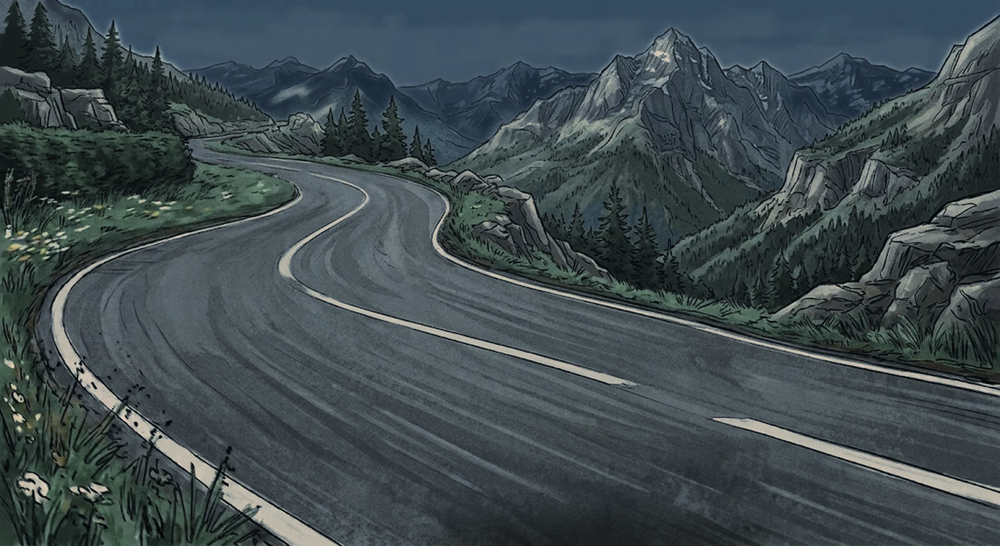
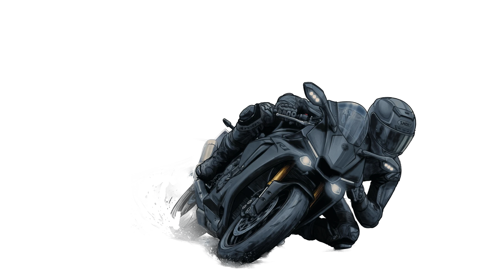

Du Tourmalet au Port d'Envalira : virages, revêtement, ouverture saisonnière et retours de motards. Coche tes cols, débloque des succès et prépare ta prochaine sortie.
Tes parcours enregistrés, visibles uniquement par toi.
Les parcours que j'ai roulés moi-même, du guidon au panneau de col.
Des parcours sélectionnés, à ouvrir directement dans Google Maps pour la navigation.
Clique sur les cols pour les ajouter à ton parcours, réorganise-les, puis ouvre le tout dans Google Maps.
Boucle : le tracé revient au départ. Aller-retour : même route dans les deux sens. Astuce : place le départ dans la vallée entre les cols pour éviter de grimper deux fois le même versant.
Calcul d'itinéraire par OSRM, altitudes par Open-Meteo. Le tracé suit les routes réelles ; vérifie tout de même l'ouverture des cols avant de partir.
Publie ta fiche — ton style de conduite, ton secteur, tes dispos — et repère les motards qui roulent comme toi. Le contact se fait par Instagram.
Tes échanges avec les autres motards. Conversations strictement privées.
Conditions actuelles et prévisions sur trois jours, dans les vallées et au sommet des cols. Données Open-Meteo, actualisées en direct.
Notes données par les motards. Un col sans vote reste sans note : rien n'est inventé.
Les parcours du site, notés par ceux qui les ont roulés.
Coche les cols que tu as roulés depuis leurs fiches pour débloquer des succès.
Sauvegardé sur cet appareil uniquement — connecte-toi pour retrouver ta progression partout.
Connecte-toi avec ton pseudo pour noter les cols.
Elle sera visible par tous les visiteurs du site.
Tes messages déjà envoyés resteront visibles par leurs destinataires : ils font partie de leur conversation.